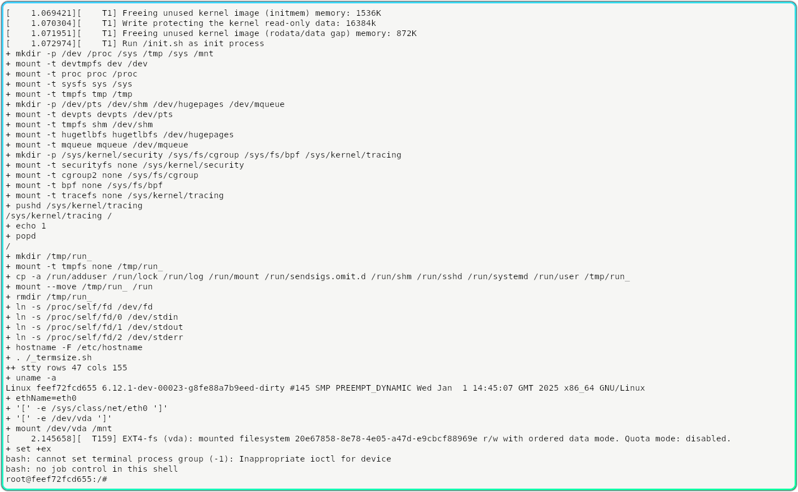

Truth be told, I've never been really good at CTFs, but I do enjoy solving challenges at my own pace, and exploring perhaps less conventional methods, learning more about programming in the process. A few weeks ago I found a reverse engineering problem which basically boiled down to running a Linux binary and entering the correct number to get it to print a flag. The program was heavily obfuscated, has anti-debugging techniques, and potentially utilized self-modifying code, but strace shows that, aside from those, it did not try to do anything fancy with system calls, attempt to save files, or communicate via network.
Fortunately, the interesting bits of the program ran quite fast – after reading the input, it spends around 5us (0.005ms) before printing out whether the guess was correct or not. The input space was also very managable – between 0 to 3,000,000. This means that even a brute-force search of the possible inputs could finish in a reasonable time, and there is no need to expend much effort on actual reverse engineering if we don't have to. The only tricky part is, how do we convince it to try different inputs as fast as this?
Before we get into more investigation, let's quickly explain what my test environment for this looks like. Since I'm not a fan of running random binaries from the Internet on my host system, we will only ever run the target binary in a VM. As you will see later in this article, there will be a good amount of kernel hacking today. Previously I made some shell scripts which comes in handy for this situation. It:
strace, gdb, trace-cmd, etc.You can get started with the same environment by cloning micromaomao/linux-dev, running make -j$(nproc) to compile the kernel, then .dev/startvm.sh to build the rootfs (if not already present) and start the QEMU VM (will require qemu-system-x86_64 to be installed). If you are on ARM, remove the -enable-kvm and -cpu host flag in startvm.sh to use emulation instead.

A straightforward, first approach would be to just run it repeatedly. However, with such a short runtime between getting the input and printing the result, any significant overhead in either the initialization of the executable itself, or the time spent in the script used to repeatedly run it quickly starts to dominate. A quick test would be to run it under strace and see how long it takes from the initial execve to the first read. That would be a good starting point to understand more about the program and catch any potentially surprising behavior, so let's do that first.
Quick reminder again that you should not run or even interact with untrusted stuff directly on your host system. This include running them under strace, gdb, or using ldd on them.
$ strace -o strace.log --timestamps=ns ./hackme ... $ cat strace.log 21:00:00.076244725 execve("./hackme", ["./hackme"], 0x7ffc71a76088 /* 13 vars */) = 0 21:00:00.082059770 open("/proc/self/exe", O_RDONLY) = 3 21:00:00.085364610 mmap(NULL, 663446, PROT_READ|PROT_WRITE, MAP_PRIVATE|MAP_ANONYMOUS, -1, 0) = 0x7f7865402000 // mapping itself as (non-persistent) read-write 21:00:00.087883357 mmap(0x7f7865402000, 663048, PROT_READ|PROT_WRITE, MAP_PRIVATE|MAP_FIXED, 3, 0) = 0x7f7865402000 21:00:00.090062941 mprotect(0x7f78654a3000, 3990, PROT_READ|PROT_EXEC) = 0 21:00:00.092506797 readlink("/proc/self/exe", "/hackme", 4095) = 7 21:00:00.095318319 mmap(0x400000, 1855488, PROT_NONE, MAP_PRIVATE|MAP_FIXED|MAP_ANONYMOUS, -1, 0) = 0x400000 21:00:00.097642653 mmap(0x400000, 1536, PROT_READ|PROT_WRITE, MAP_PRIVATE|MAP_FIXED|MAP_ANONYMOUS, -1, 0) = 0x400000 21:00:00.099838908 mprotect(0x400000, 1536, PROT_READ) = 0 // rwx... I later realized this executable has gone through a packer 21:00:00.102363996 mmap(0x401000, 1420157, PROT_READ|PROT_WRITE|PROT_EXEC, MAP_PRIVATE|MAP_FIXED|MAP_ANONYMOUS, -1, 0x1000) = 0x401000 // ... more stuff follows which aren't too interesting for now ... 21:00:00.129039501 mprotect(0x401000, 1420157, PROT_READ|PROT_EXEC) = 0 21:00:00.132023341 mmap(0x55c000, 346488, PROT_READ|PROT_WRITE, MAP_PRIVATE|MAP_FIXED|MAP_ANONYMOUS, -1, 0x15c000) = 0x55c000 21:00:00.138600815 mprotect(0x55c000, 346488, PROT_READ) = 0 21:00:00.141142324 mmap(0x5b1000, 49832, PROT_READ|PROT_WRITE, MAP_PRIVATE|MAP_FIXED|MAP_ANONYMOUS, -1, 0x1b1000) = 0x5b1000 21:00:00.143710481 mprotect(0x5b1000, 49832, PROT_READ|PROT_WRITE) = 0 21:00:00.145928557 mmap(0x5be000, 27880, PROT_READ|PROT_WRITE, MAP_PRIVATE|MAP_FIXED|MAP_ANONYMOUS, -1, 0) = 0x5be000 21:00:00.148246519 mmap(NULL, 4096, PROT_READ, MAP_PRIVATE, 3, 0) = 0x7f7865401000 21:00:00.150516772 close(3) = 0 21:00:00.153247606 munmap(0x7f7865402000, 663446) = 0 21:00:00.155881587 arch_prctl(0x3001 /* ARCH_??? */, 0x7ffce824f170) = -1 EINVAL (Invalid argument) 21:00:00.158451970 brk(NULL) = 0x5c5000 21:00:00.160858466 brk(0x5c5d80) = 0x5c5d80 21:00:00.163373055 arch_prctl(ARCH_SET_FS, 0x5c5400) = 0 21:00:00.165862687 set_tid_address(0x5c56d0) = 184 21:00:00.168069772 set_robust_list(0x5c56e0, 24) = 0 21:00:00.170348551 rseq(0x5c5d20, 0x20, 0, 0x53053053) = 0 21:00:00.172586062 prlimit64(0, RLIMIT_STACK, NULL, {rlim_cur=8192*1024, rlim_max=RLIM64_INFINITY}) = 0 21:00:00.174898664 readlinkat(AT_FDCWD, "/proc/self/exe", "/hackme", 4096) = 7 21:00:00.177229490 getrandom("\xb8\xaa\xbf\x47\x80\xa4\x0a\x0e", 8, GRND_NONBLOCK) = 8 21:00:00.179682734 brk(NULL) = 0x5c5d80 21:00:00.181862768 brk(0x5e6d80) = 0x5e6d80 21:00:00.183994583 brk(0x5e7000) = 0x5e7000 21:00:00.186285765 mprotect(0x5b1000, 40960, PROT_READ) = 0 21:00:00.188569383 futex(0x5bd9dc, FUTEX_WAKE_PRIVATE, 2147483647) = 0 // Detecting debugger by looking for TracerPid? 21:00:00.190868059 openat(AT_FDCWD, "/proc/self/status", O_RDONLY) = 3 21:00:00.193172756 read(3, "Name:\thackme\nUmask:\t0022\nState:\t"..., 8191) = 1076 // ... more strace output ...
I suspect it is detecting debuggers and potentially changing its behavior. After writing this I later found out that actually it will pretend to run as normal even when it has detected a tracer, but actually will not print the flag even with the right input. I decided to run it in my VM with a modified kernel that will always say TracerPid is 0. I found the code that puts that number in /proc/self/status by simply searching for “TracerPid”:
With the linux-dev environment I mentioned before, we can simply make to produce a new kernel image, then kill the old VM (with .dev/stopvm.sh or Ctrl-D on the console) and run startvm.sh again.
It then proceeded to do this, which I assume is a second layer of debugger detection:
ptrace(PTRACE_TRACEME) = -1 EPERM (Operation not permitted)
It is probably looking for whether this call returns a -EPERM, which would indicate that the process is (already) being traced, or 0. But since we're already making kernel changes, this is not difficult to work around either:
Quick note: instead of making such changes to the kernel, there are alternative to strace which relies on seccomp-unotify instead of ptrace, which also gets around anti-debugging techniques that targets ptrace, and may be more convenient to use in other situations.
Now let's try strace it again:
$ strace -o strace.log --timestamps=ns ./hackme ... $ cat strace.log 21:01:00.368065520 execve("./hackme", ["./hackme"], 0x7ffe48cd5cb8 /* 6 vars */) = 0 ... 21:01:00.486692889 openat(AT_FDCWD, "/proc/self/status", O_RDONLY) = 3 21:01:00.489438989 read(3, "Name:\thackme\nUmask:\t0022\nState:\t"..., 8191) = 1066 21:01:00.491976961 close(3) = 0 21:01:00.494425997 getrandom("\x75\x79\x93\x7f\x58\x99\xe3\x3e", 8, 0) = 8 21:01:00.496887787 getrandom("\x21\x5f\xfa\x83\x6c\x93\xef\x97", 8, 0) = 8 21:01:00.499471244 ptrace(PTRACE_TRACEME) = 0 // yay 21:01:00.501847234 getrandom("\x32\x5b\x46\xf2\x18\x84\xee\x3e", 8, 0) = 8 // ... more getrandom ... 21:01:00.530190685 getrandom("\x25\x69\xff\xa5\x61\x13\x9d\x82", 8, 0) = 8 // Detecting if stdin/stdout is a terminal before read/write... // Could be using this to decide if it will buffer IO, or actual anti-scripting measure? 21:01:00.532301961 newfstatat(1, "", {st_mode=S_IFCHR|0600, st_rdev=makedev(0x5, 0x1), ...}, AT_EMPTY_PATH) = 0 21:01:00.535515472 ioctl(1, TCGETS, {c_iflag=ICRNL|IXON, c_oflag=NL0|CR0|TAB0|BS0|VT0|FF0|OPOST|ONLCR, c_cflag=B115200|CS8|CREAD|HUPCL|CLOCAL, c_lflag=ISIG|ICANON|ECHO|ECHOE|ECHOK|IEXTEN|ECHOCTL|ECHOKE, ...}) = 0 21:01:00.539257429 write(1, startup output..., 48) = 48 // ... 21:01:00.544755153 newfstatat(0, "", {st_mode=S_IFCHR|0600, st_rdev=makedev(0x5, 0x1), ...}, AT_EMPTY_PATH) = 0 21:01:00.547057135 ioctl(0, TCGETS, {c_iflag=ICRNL|IXON, c_oflag=NL0|CR0|TAB0|BS0|VT0|FF0|OPOST|ONLCR, c_cflag=B115200|CS8|CREAD|HUPCL|CLOCAL, c_lflag=ISIG|ICANON|ECHO|ECHOE|ECHOK|IEXTEN|ECHOCTL|ECHOKE, ...}) = 0 21:01:00.549331495 read(0, "1\n", 4096) = 2 // Note slight pause here due to input from serial terminal. 21:01:00.551503575 write(1, "Nope"..., 43) = 43 21:01:00.554241515 exit_group(0) = ? 21:01:00.556739011 +++ exited with 0 +++
If we use the kernel tracing tool trace-cmd (which interacts with ftrace and related APIs designed for both kernel debugging and performance tracing), we can find out how long the program spends computing the result after reading the input, not including time spent in the actual I/O, and also without any strace overhead (which was actually quite significant when you're looking at sub-ms level):
trace-cmd record -e syscalls/sys_exit_read -e syscalls/sys_enter_write ./hackme
trace-cmd report
cpus=1 trace-cmd-73 [000] ..... 6.140092: sys_exit_read: 0xcd trace-cmd-73 [000] ..... 6.140094: sys_exit_read: 0x0 hackme-74 [000] ..... 6.170574: sys_exit_read: 0x42a hackme-74 [000] ..... 6.170590: sys_enter_write: fd: 0x00000001, buf: 0x005c6920, count: 0x00000030 hackme-74 [000] ..... 6.170597: sys_enter_write: fd: 0x00000001, buf: 0x005c6920, count: 0x00000026 hackme-74 [000] ..... 7.005362: sys_exit_read: 0x2 hackme-74 [000] ..... 7.005370: sys_enter_write: fd: 0x00000001, buf: 0x005c6920, count: 0x0000002b trace-cmd-72 [000] ..... 7.006417: sys_enter_write: fd: 0x00000003, buf: 0x565507307586, count: 0x00000001
That's 8us from returning from read to attempting write! On the other hand, getting to the first read from the start of the program took almost 200ms, and so if we have to run the whole thing repeatedly (for example, in a bash loop), it will be 200ms 3,000,000 7 days! Now, you can of course use more CPU cores and run multiple instances of this loop at once, but that's not a very interesting solution. In this case the challenge is also time-sensitive and so we need something better.
ptraceA natural thing to try might be to somehow force the process to fork before reading the input. This way, if an input fails, we can simply return back to the original state, fork it again, and try another input, without having it go through the 200ms initialization each time. While this does sounds quite tricky, the ptrace API, which is what debuggers uses behind the scene, allows a tracer to do a lot of interesting things to its child, like hooking and injecting syscalls, rewriting memory, etc. And so it is not difficult to imagine a C program which uses ptrace to:
forkread)write), and if the input is incorrct:A program like this could also fake /proc/self/status and the result of ptrace(PTRACE_TRACEME), thus defeating the debugger detection.
Now, doing all this isn't free. With such short runtime per iteration (5-10us), the overhead of fork and the context switch between the supervisor, the parent to be forked, and the forked child process quickly dominates the time spent. I created a simple C program fork-test.c which measures time elapsed between just calling fork and it returning in the child, and from my testing, forking even this simple process usually takes ~50-150us. This is without the involvement of any ptrace supervisor, the process has less memory mappings than the real binary we're testing, and we're not writing or reading its memory from a remote process. It is reasonable to assume that if we were to actually do the proposed ptrace-based experiment, one iteration including handling read/write will take at least 100us on average (probably more).
With 100us per iteration, searching through all the inputs will take 5 minutes, which is not bad at all. The result does depends on time though, and for certain time periods there won't always be a valid input. This means that if we don't feel like sitting behind the computer waiting for potentially tens of minutes, we need to either parallelize it by a lot (with different processes trying different ranges of input), or advance our system clock to the future, so that when we come back from our half-hour coffee break the solution is not expired already.
I have tried but have not been successful in coercing ChatGPT (o1) to give me an out-of-the-box working solution for this – it is tripping over getting the child to behave correctly and I ran out of patience debugging.
Now, while I don't think there is any reason why the forcing fork approach wouldn't work, this is not the approach I ended up using. Notice that the program doesn't really try to do anything fancy (at least not externally visible) between read and write – all it does is spin some numbers around in its own memory, then spits out ‘Correct’ or ‘Nope’. This means that, in theory, all we have to do is restore it's memory and register states, and let it try with a different injected input. Without the overhead of forking another process, this has the potential to be a lot faster – we're basically turning the whole input validation process into a for loop! It's just that the for is outside the program.
This is also doable with ptrace, since we can read and write the memory of our traced process, and save/restore its registers. One way we can do this is to save off the content of all writable memory regions—in this case barely even 1 MB—and restore them along with the registers after each iteration. If we want to go even further, we can use userfaultfd to monitor which pages are written to after we inject our test input, and only restore those pages. For a program which has a lot more state than a few MB, this could be quite worthwhile.
Since ChatGPT already failed me once, I'm not going to try and convince it to make this work either. In principle it should all work, but as you will see, this is also not the approach I ended up using.
Recently I have also been getting very interested in Linux kernel development (from debugging weird kernel panics at work ), so I decided why not turn this into a kernel programming exercise, and try to get Linux to automatically try all the possible inputs for me? The core idea is:
hackme”).read from stdin, we: write to stdout, we: read syscall, which will cause the next input to be injected; Now, this might seem like massive overkill, and it probably is, but hear me out:
ptrace supervisor, or really any other process at all. There is no context switching or waiting between processes, and we can truly run the brute-force loop at the fastest possible speed. 5us 3,000,000 is 15 seconds.ptrace API is quite difficult to use, getting syscall hooking right is not easy (recall ChatGPT failed to write the first ptrace solution), and so we might as well just have the kernel do what we want.I will now walk through each step one by one, as laid out above. If you as the reader don't have a lot of kernel experience (I certainly don't), hopefully by going like this, this will not be too difficult to follow:
I will be using the term ‘process’ and ‘task’ interchangeably in this article.
The first step is to identity and mark the process we're interested in. In Linux, each process is represented by a struct task_struct, which contains things like the PID, process name, memory mappings, and a thousand other things. We can of course add our own data to this struct – for example, we can have a bool to indicate whether a process is our hack target, and use it to decide if we should do special things in our modified read/write syscall handlers (we don't want to break unrelated processes like the shell, for example).
You probably know that when you run an executable, the shell forks a subprocess then run exec with the command arguments. If we assume our target binary is always named “hackme”, we can check for this in the handler for exec, and set the bool we added previously to true.
With some searching and perhaps tracing with ftrace (I found function_graph to be particularly useful), we find that there is a common function for execve and execveat – do_execveat_common, and so we can add our code there, and add the additional field to the task_struct: